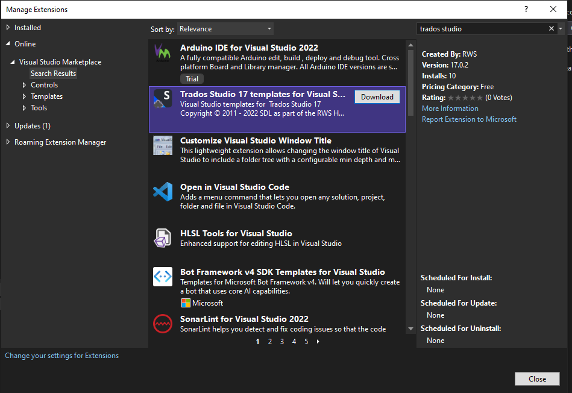

Setting up a Developer Machine
Make sure you have the right prerequisites and meet the system requirements to develop applications that leverage the Trados Studio public APIs.
Prerequisites
- For the development environment, we recommend using Microsoft Visual Studio 2022.
- You need a licensed Trados Studio 2022 or later installed on your development machine
- We also recommend installation of the Trados Studio SDK on your machine. Note that after the installation of Trados Studio SDK, the New Project dialog box from Microsoft Visual Studio 2022 will feature additional project templates specific to the Trados Studio application development.
- You can get the latest version from the developer hub.
- Or you can install directly from Microsoft Visual Studio 2022 -> Tools -> Extensions 
- If your implementations need to connect to a TM Server system, then make sure that the TM Server also runs the latest version.
- If you are developing against a version of API the which is distributed with one of SDL's publicly released applications (i.e. Trados Studio 2022), then all required assemblies and files should be available alongside the application. Make sure that you have the latest release of Trados Studio installed.
Note
As build output path for your implementations please choose the %AppData%\Trados\Trados Studio\17\Plugins\Packages\
Also check that your library references are pointing to the Trados Studio folder. e.g. C:\Program Files (x86)\Trados\Trados Studio\Studio17.
For more informations regarding how to build and deploy a Studio plug-in see Building a plug-in and Plug-in deployment
Sign and use Strong-Named Assemblies to enable the loading of your plug-ins inside Trados Studio. For more information see How to: Sign an Assembly with a Strong Name
If you don't have a key, you can download SdlCommunity.snk key from public AppStore repository.
Choosing a different build output path or not signing your assembly will prevent your plugin to be loaded.
System requirements for running Trados Studio 2022:
- A Microsoft Windows-based PC or an Intel-based Apple Mac computer running Windows as an operating system. Trados Studio 2022 runs on the latest build of Windows 11 and the latest updated version of Windows 10.
- Up to 2.5 GB of available disk space to run the Trados Studio 2022 installer
- 2 GB of available disk space to run Trados Studio 2022
- A recent processor with dual or multi-core technology
- At least 8 GB RAM
- Trados Studio 2022 requires Microsoft .Net Framework 4.8.
- Additional details can be found on the product release notes
System requirements for running SDL GroupShare ( TM Server, Multiterm, Project Server):
- Windows Server 2019, with IIS 10 / Windows Server 2016, with IIS 10 / Windows Server 2012 R2, with IIS 8.5
- The database servers supported are: SQL Server 2019 / SQL Server 2017 / SQL Server 2016
- Additional details can be found on the product release notes